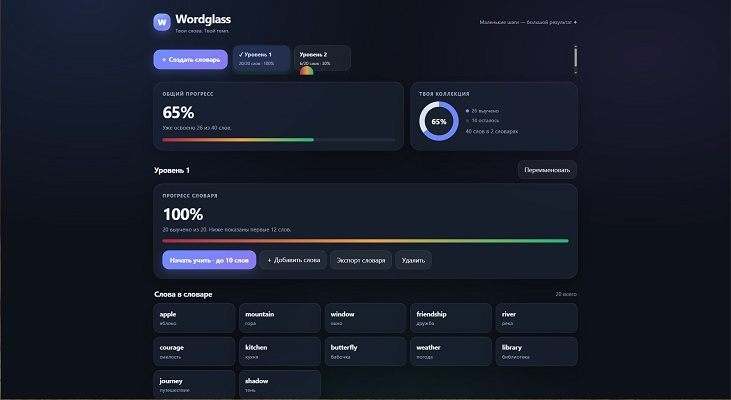
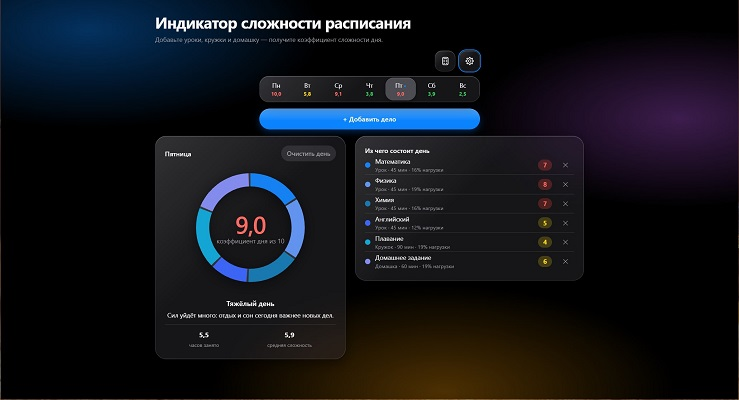
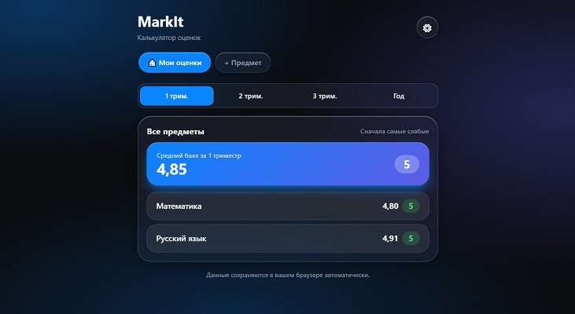

🌐 Этот сайт
Мой первый многостраничный сайт на чистом HTML и CSS. Список мероприятий, страница о себе, контакты.
HTML · CSS · JavaScript
Открыть на GitHub →Здесь я собираю то, что сделал сам — учебные и личные проекты. Код каждого лежит на GitHub, ссылки ниже.
Мой первый многостраничный сайт на чистом HTML и CSS. Список мероприятий, страница о себе, контакты.
HTML · CSS · JavaScript
Открыть на GitHub →
Wordglass — персональный тренер английских слов. Создавайте собственные словари, учите слова с помощью карточек, проходите тесты и проверяйте знания. Отслеживайте прогресс, повторяйте сложные слова и постепенно расширяйте словарный запас.
HTML · CSS · JavaScript
Открыть на GitHub → Открыть сайт →
Индикатор сложности расписания — школьный веб-планер, который помогает оценить учебную нагрузку на каждый день и распределить дела в течение недели.
HTML · CSS · JavaScript
Открыть на GitHub → Открыть сайт →
MarkIt — это простой и умный веб-калькулятор, который помогает засчитывать средний балл и спрогнозировать итоговую оценку по предметам. Больше не нужно считать в уме или на обычном калькуляторе!
HTML · CSS · JavaScript
Открыть на GitHub → Открыть сайт →